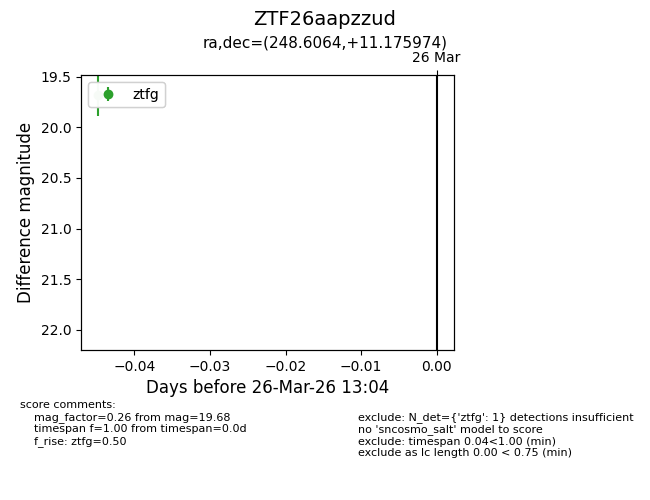
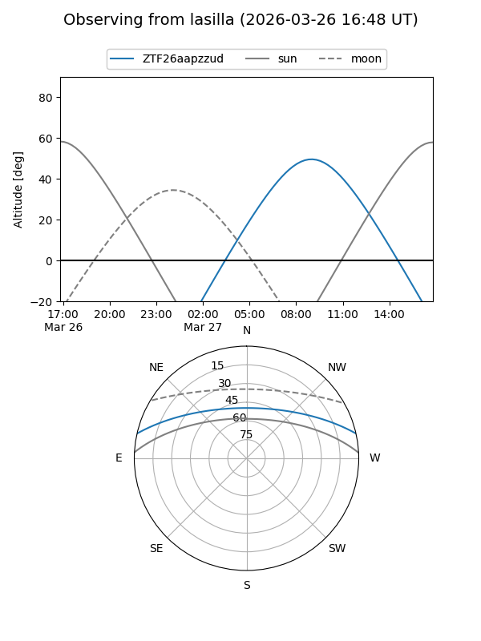
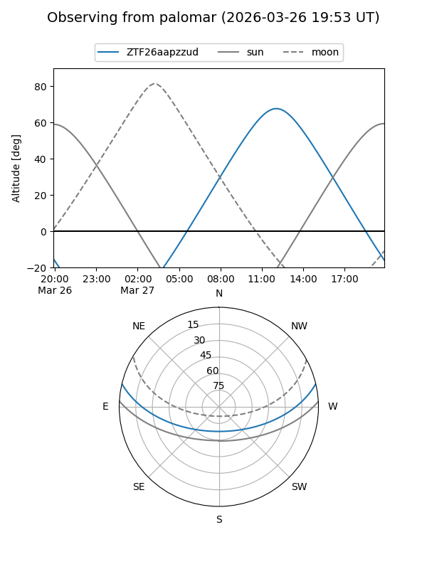

ZTF26aapzzud
Target ZTF26aapzzud at 2026-03-26 13:06
Aliases and brokers:
FINK: link
Lasair: link
ALeRCE: link
alt names
ZTF26aapzzud (ztf,fink_ztf)
Coordinates:
equatorial (ra, dec) = 248.6064,+11.17597
equatorial (HMS+DMS) = 16:34:25.54,+11:10:33.51
galactic (l, b) = (27.3477,+35.43717)
Flags:
Photometry:
last ztfg=19.68
1 ztfg detections
Lightcurve

Visibility


Additional plots